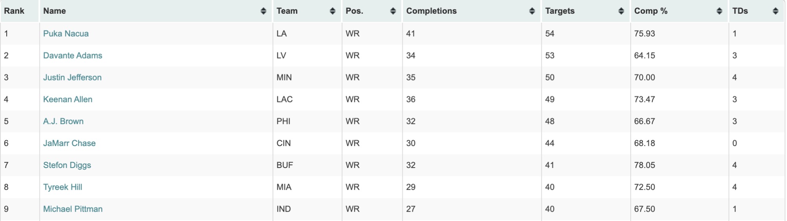
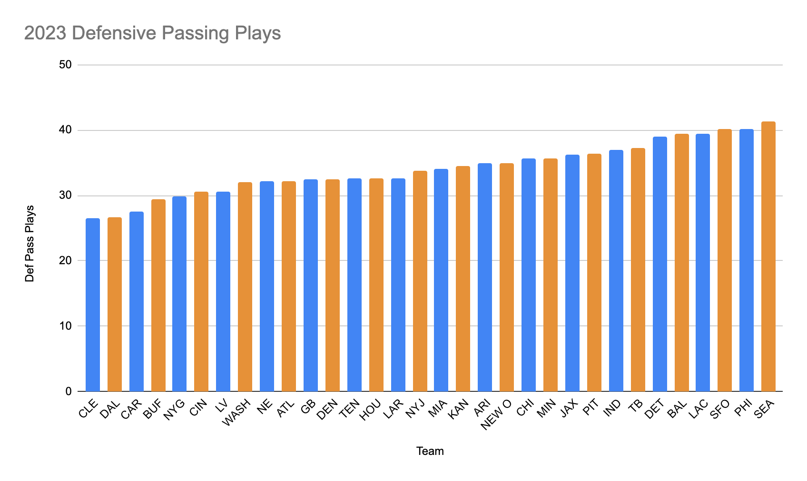
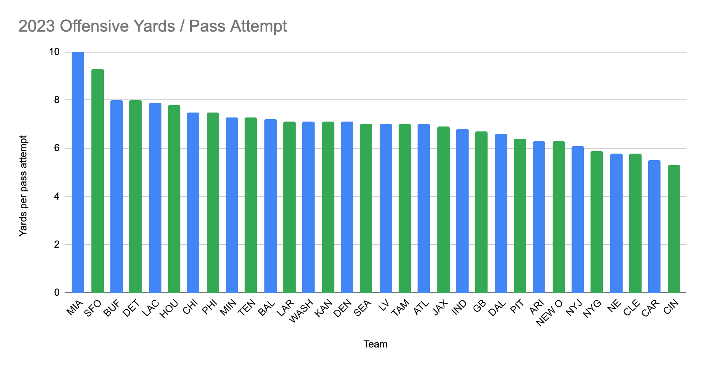

Fantasy Football: Predicting Wide Receiver Perfomances with Statistics
By Ayush Gupta | November 20, 2023

Introduction
Football is arguably the most popular sport in the nation. Every year it attracts tens of millions of viewers who indulge either in casual watching, or even serious betting. Bill Winkenbach acknowledged the popularity of the NFL and created a digital space, which would later be known as Fantasy Football, that allowed fans to interact with the sport of football in a unique way. According to ESPN, in the U.S alone, around 40 million people are a part of their own leagues, including some of the most reputed NFL players.
What makes Fantasy Football fun is its statistical unpredictability– a player may perform well on one week, but bad on the next. To many casual fantasy football players it seems random on how a player is going to perform, but with the use of analytics there are potentials of finding better methods for player selection. This article will analyze the variables that can be looked at in order to determine which players (specifically in the Wide Receiver position) to start and which players to sit for a given week.
Visualizations
In order to figure out and rank which variables are most important for predicting a WR’s production, we need to understand how a WR’s Fantasy points are calculated. In most of the standard PPR (point per reception) leagues, the formula goes as follows:
By analyzing this formula, we can then try to figure out which factors lead to higher touchdowns, catches, and yards. One main one that sticks out immediately is the amount of targets each receiver is getting in a certain game. With more targets, the chances of getting a catch is higher; this applies to getting yards and touchdowns as well. The following picture shows the distribution of targets to a number of receivers throughout the 2023 season until week 5.
The picture above ranks the 9 receivers with the most targets in descending order. It’s important to note the top targeted receivers like Puka Nacua are also the top Fantasy scorers. While the order above isn’t exactly synonymous with the order of the leading Fantasy scorers, it’s clear that there’s a direct correlation with targets and total fantasy points, which makes it an important variable to understand when choosing when to start or sit a receiver.
Another factor that can be looked at is how many times the defending team is passed on. This is important because if a defense is seeing a lot of passes it’s a possibility that either their cornerbacks are weak or their run defense is strong. In either case, if a receiver is going against such a defense, they will probably perform better than they would on an average day. The following visualization shows the rankings of teams’ defensive passing plays.
However, applying such a reasoning to the chart above needs to be done carefully because of confounding variables. For example, the 49ers top this chart even though they have one of the strongest defenses in the NFL. One reason that explains this is that the 49ers strong offense often puts them in the lead early, causing other teams to pass more so they can try to form a comeback.
It can also help to look at what types of passes an offense is mostly executing. Because yards are part of the equation for calculating a Wide Receiver’s total Fantasy points, deep passes are ones that would lead to the most points.
By looking at a chart like the one above, we can see which teams are passing deep the most. This can reveal which receivers are most likely to get the most amount of yards in a game, and thus is an important variable for contemplating whether to start or sit a receiver. The following chart shows Miami as the number one team for pass yards per attempt, which actually corresponds to the current number one receiver in Fantasy: Tyreek Hill, who is averaging over 26 points per game.
Conclusion
There are many factors that can be looked at when determining which players to start and which players to sit for a given week. By looking at helpful visualizations and seeing how they relate to a player’s actual Fantasy score, we can more closely understand which variables affect a WR’s production the most.